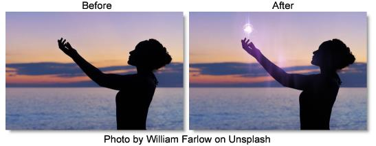

Particle Illusion
Description
Particle Illusion is an easy-to-use, powerful, particle generator that creates photorealistic particle effects such as fire, fireworks, explosions, sparks, smoke, fog, dust, water, clouds, rain, snow, trails, sci-fi elements and heads up displays.
Category
Particle Illusion. This category contains the following preset groups: Complete, Sampler, Abstract, Background, Dust-Fog, Emitters-2020, Emitters-2020.5, Emitters-2021, Emitters-2021.5, Emitters-2022, Emitters-2022.5, Explosions, Fire, Fireworks, HUD-UI, Magic, Misc, Nature, Sci-Fi, Smoke, Snow, Space, Sparkles, Trails, Tunnels, Water
Controls
Presets
To select a preset, pick one from the Presets window.
Launch PI [Version #]
Comprehensive editing of particles takes place in the Particle Illusion user interface. However, you can select particle presets directly in Optics and use the subset of parameters below to perform common tasks without entering Particle Illusion.
For more information on Particle Illusion, see the
Particle Illusion User GuideNote: There are only three libraries installed in the Particle Illusion interface by default: the Sampler library, the Emitters_202X library of new emitters for this release and an editable Custom library. To get the full set of additional emitter libraries, select Download Emitters from the Help menu.
Composite
Composite Style
Particle Illusion can be applied using a variety of Blend modes.
Direct (Classic)
Composites the particles directly over the source image.
Opacity
The opacity of the particles.
Tint Color
Sets the tint color.
Tint Strength
Sets the tint strength.
Alpha + Apply Mode
Provides a wide variety of Blend modes to add particles to the source image.
Opacity
The opacity of the particles.
Apply Mode
Selects the Blend modes used to add particles to the source image.
Apply Mix
The opacity of the Blend mode.
Brightness
Sets the brightness.
Contrast
Sets the contrast.
Gamma
Sets the gamma.
Tint Color
Sets the tint color.
Tint Strength
Sets the tint strength.
Apply Grade
Composition
Applies the brightness, contrast and gamma adjustments to the entire composition.
Particles Only
Applies the brightness, contrast and gamma adjustments to just the particles.
Transforms
Determines how transforms are applied.
None
No transforms are applied.
World
Transforms the camera position.
Emitter
Transforms the emitter position.
World + Emitter
Transforms both camera and emitter positions simultaneously.
World Transform
World Center
The horizontal and vertical position of the particles when Transform is set to World or World + Emitter.
Master Scale
Scales the particles.
Scale X
The horizontal scale amount.
Scale Y
The vertical scale amount.
Rotate
Rotates the particles.
Emitter Offset
The horizontal and vertical position of the particles when Transform is set to Emitter or World + Emitter.
Particle Properties
Edit select native Particle Illusion parameters without having to open the PI interface.
Frames to Preload
Sets the number of frames that the emitter will run before the first frame in the particle sequence, allowing it to have many particles visible at the start instead of starting from zero particles.
Life
The particle lifetime.
Number
The number of particles.
Size
The size of the particles.
Velocity
The speed of the particles.
Weight
The weight of particles.
Spin
The rotation of the particles.
Motion Randomness
The randomness of the particle motion.
Zoom
Zooms the particles in or out.
Random Seed
Randomizes the particles. Changing this value by any amount will result in a different pattern of particles and is the easiest way to get a new version of the effect.
Motion Blur
When enabled, particles are drawn with motion blur. This enhances realism, especially for fast-moving particles.
PI Settings
The Motion blur settings form the Particle Illusion interface are used.
Force On
Forces motion blur on.
Force Off
Forces motion blur off.